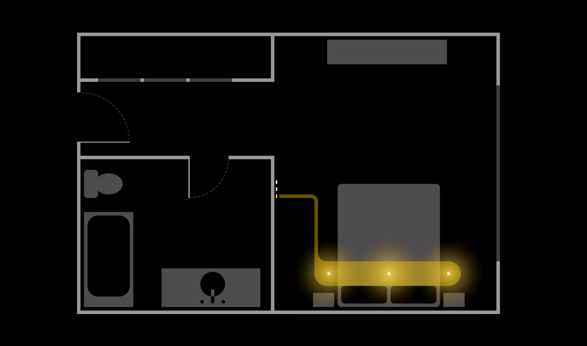
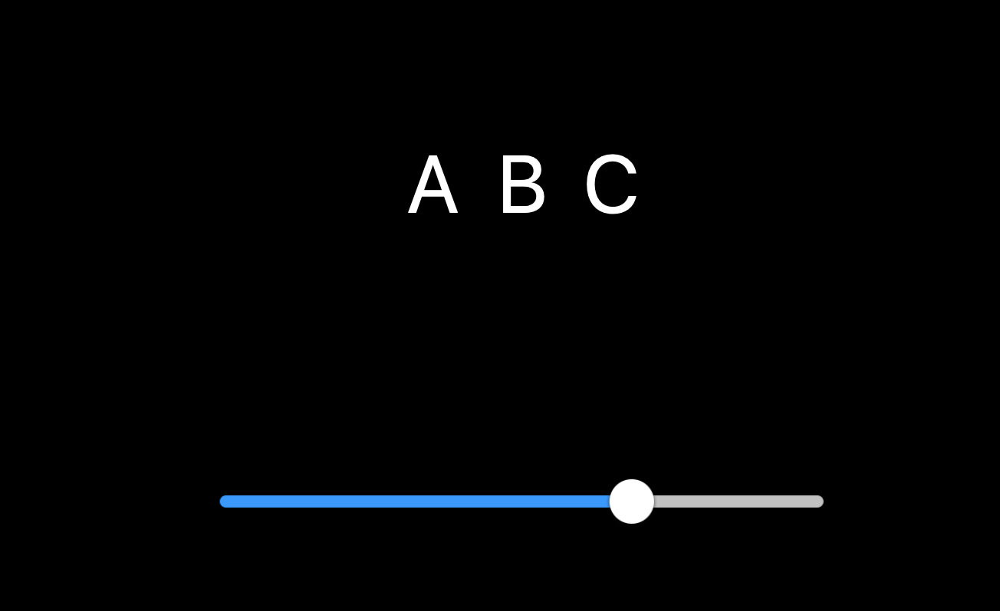
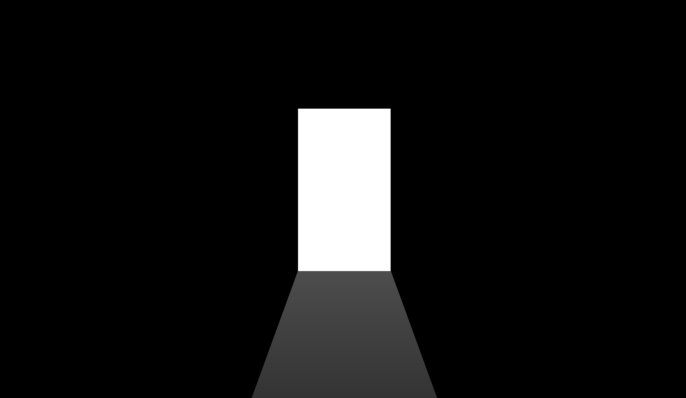
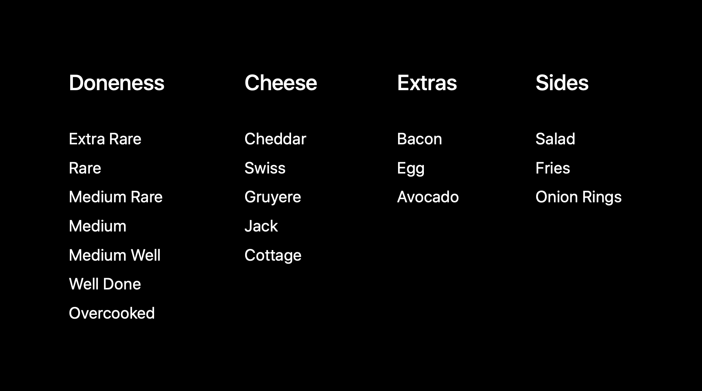
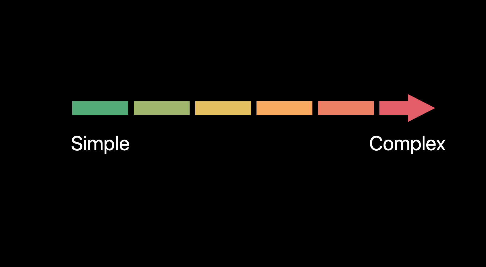
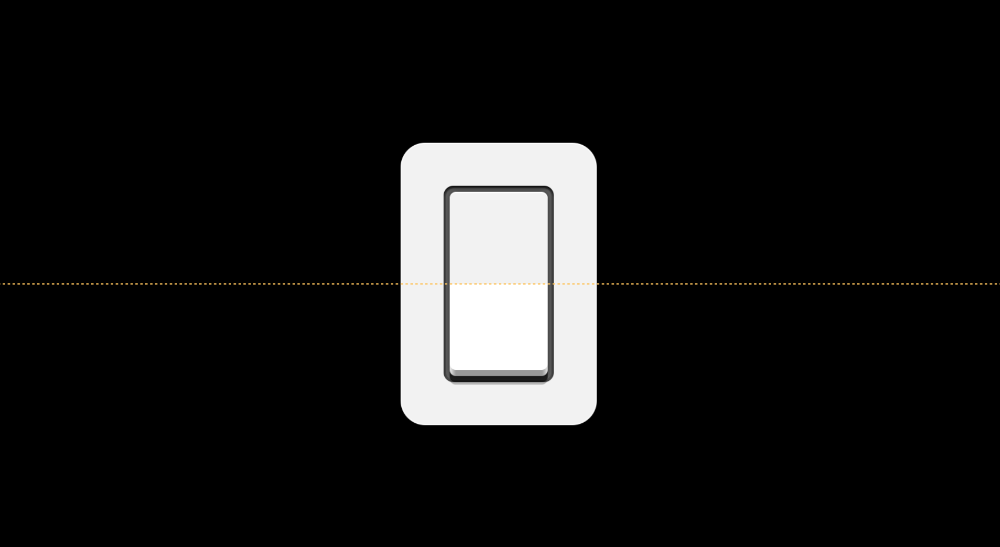
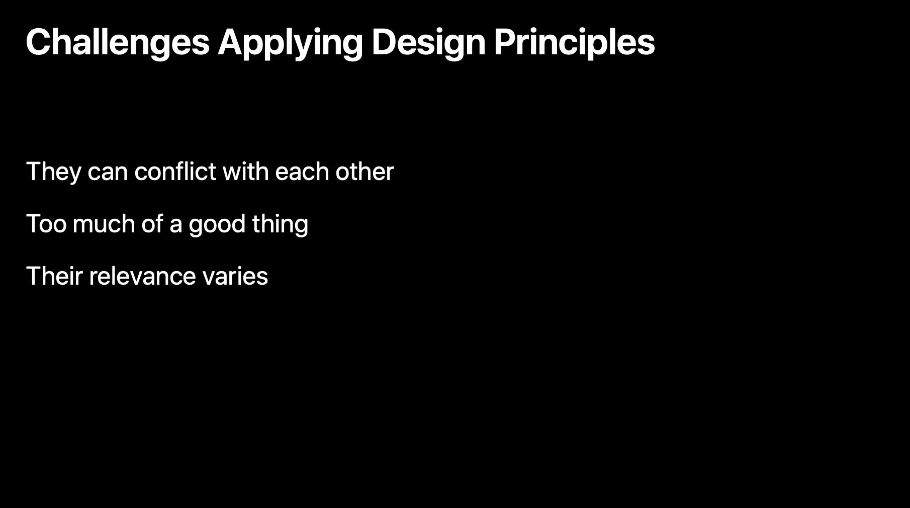

核心设计原理的上半部分通过一个去夏威夷旅游的经历中的所见所闻所想讲述了导向、反馈、可见性、一致性、心智模型几个设计原理，旅程还没有结束，这是核心设计原理的下半部分。
目录
- 目录
- 接近性 Proximity
- 分组 Grouping
- 映像 Mapping
- 可供性 Affordance
- 渐进展开 Progressive Disclosure
- 八二原则 80/20 Rule
- 对称性 Symmetry
- 总结
- 参考链接
接近性 Proximity
你按了一下开关关掉浴室的灯走出来，太阳落山了，屋子里有些暗，所以你打开了走廊的灯。接着你走进卧室，按下开关打开了另外几盏灯。这概括来说就是设计原理「接近性」。接近性是有关于控件和它控制的对象之间的距离。
一个控件离那个对象越接近，两者之间的关联就可能越大，浴室的灯的开关在浴室里，走廊的灯的开关在走廊里，卧室的灯的开关也当然在卧室里。好的接近性也是符合人体工程学的。通常情况下，你离物体或者感兴趣的区域越近，你越可能与它进行交互或者控制它，人们认为走进浴室时可以打开浴室灯的开关。所以把灯的开关放在门的旁边，需要的时候伸一下胳膊就能够到。
接近性对表现控件之间的关系也有用。例如，如果你在墙上看到一些开关，你知道其中一个可以控制灯的开关，然后你就可以假设其他开关也是灯的开关。
如果其中一个是控制灯的亮度，那最好把它与其他分隔开来。这种设置让人们更容易记住哪个开关是控制灯的亮度，哪个开关是控制灯的开关。
分组 Grouping
上面说的这种设置和安排就是「分组」。分组是一个非常基础和重要的设计原理。分组可以帮助人们理解元素之间的关系，它是确定设计结构的关键核心。
虽然我们理解这个，但许多 app 没有有效地利用分组，它很容易被忽视。现在来看一些接近性和分组如何构建设计的结构、建立控件和它影响的对象或视图的例子。
在「Keynote」app 中，接近性帮助我们把显示菜单与幻灯片导航器和画布区域联系在了一起。几个对象创建工具放置在了画布的上方，创建后这些对象将会在画布上出现。格式和文稿选项的切换位于这些面板显示的正上方。
在「Sketch」 app 中，你可以看到分组如何被用于将彼此相关的控件聚在一起，像是成组/取消成组控件、转换和编辑工具控件、路径操作控件、图层排序控件。
你的界面越大，对接近性和分组的需求绝对会越高，但这个设计原理对 iPhone、iPad 甚至 Apple Watch 这样的小屏幕也很重要。
映像 Mapping
现在回过头来再来看下调整灯的亮度的开关。看看这个开关，你现在可能并不能知道开关是开着还是关着，但当把开关改成滑动条的样式的时候，你就知道它是关着的了。这就是映像，映像让你知道它是开着还是关着，映像是指控件的设计能象征它所控制的对象，向上就是调亮灯光，向下就是调暗灯光，用一个可以上下移动的控件在这里是可以讲清楚的，对于如何调整亮度没有模糊。
映像也与控件之间是如何排列的有关。它们的顺序应该象征着被控制对象的配置。对于卧室的多盏灯与多个开关来说，良好的映像就是让灯的开关镜像安排成灯的布局。通过专注于映像，会更容易做出在哪里放置控件、如何排序它们甚至该使用哪个控件的选择。

当映像不够清楚的时候，你会发现文字标签的出现，这有作用，但不是一个好的解决方案。阅读需要花费时间，对人们记住控件的位置或者如何与它们进行交互没有帮助。

在界面的场景中，使用一个水平的滑块调整一个水平属性更加直观，类似的，使用一个拨号盘调整旋转角度比滑块或者步进器的效果更好。

当然，最好的映像是最直接的映像，可以让人们直接能操纵对象，这更直观、更精确，例如在 macOS 上的鼠标指针或者 iOS 上的手势。
可供性 Affordance
接下来要去餐厅吃晚饭。当你坐下来时，你会在你面前看到一个空盘子。用这个空盘子可以做什么呢？你可以用来装食物，你也可以用它来做其他事。盘子很光滑，很容易转起来，盘子有一个边缘，很容易像飞碟一样抓住并扔出去，开个玩笑了。我们对如何与这个盘子进行交互的见解就是「可供性」。换句话说，一个盘子的物理特性提供了关于这个盘子可以提供给我们什么交互的视觉和触觉提示。
我们看着盘子思考，我们把食物放进去，或者我考虑用这个盘子把我的食物运到另一个地方，我们不会考虑用这个盘子去装水。可供性不是对象本身的属性，它更多的是人和对象之间的关系。可供性基于一个人的身体能力而不同，因此可供性对每一个人都不一样。例如，一个飞碟提供了我可以抓住和扔出去的能力，但对于我的狗，一个飞碟只提供了狗抓住的能力，没有扔出去的能力。一个盘子提供了我用它吃饭的能力，我的狗也能感知得到这个可供性。
因为可供性是主观的，一个人能感知到的可供性其他人可能感知不到。当与一个可能进行的动作相关时，人会更可能地感知到可供性。例如，虽然我可以把这个盘子当做茶托，但这是一个几乎不可能的动作，所以我不能容易地感知到一个盘子可以做茶托的可供性。我很可能把事物放在里面，所以我容易感知到一个盘子可以装食物的可供性。
这种可供性的感知与每个环境、每个你交互的对象都有关系。当你走进一家餐馆时，你经过了一道提供给你可以穿过的可供性的门，门比人高比人宽，你可以想到你的身体可以轻松穿过去，地面平坦连续，你可以想到你自己可以没有障碍地走过去，不会被绊倒。

你坐的椅子提供了可以坐的可供性，你面前的桌子提供了可以把东西放在上面的可供性，你脚下的地面提供了可以让你歇歇脚的可供性。
人制造的产品都会通过提示提供可供性，它让人们知道哪些操作是可以进行的，这些提示的明显程度和可见性帮助人们知道交互的正确或倾向方式。
app 同样也是这样。滑块可以让人在轨道上拖动小圆点，拨盘让人旋转，按钮让人可以点击。在每一个这样的例子中，可供性都在用最大的效率传达。事实上，随着时间推移，我们会更加习惯于抽象事物。按钮就是物理真实世界按钮的一个高度抽象，两者之间的关联就是圆角弧度。
在滑块小圆点周围微弱的阴影把它与轨道分开，这表明它可以被独立移动。甚至是这个视觉提示都不是完全必要的。多余大多数人来说，看到一条直线上有一个填充的圆形就足以感知到它的滑块可供性。

有时可供性通过动画来传达。在「天气」app 中轻点，会看到画面滑上去一点，这表明内容区域可以被滚动。不管你用了什么技术，你的 app 的界面必须清晰的表现它提供了什么行为能力。如果没有的话，人们就不知道如何合适地与其进行交互，他们会用你 app 不提供的方式与其进行交互，他们会对不可交互的控件感到困惑。
渐进展开 Progressive Disclosure
现在我们知道了食物应该去哪儿，现在该点菜了。我想要一个芝士汉堡，我跟服务员说了我要的菜，服务员问我几分熟，我说七分熟；他问我要哪种芝士，Cheddar/Swiss/Jack/Gruyere/Cottage，我说要 Cheddar；他问我是否要加点培根、鸡蛋、牛油果，我说不需要；他问我是否需要薯条、输啦或者洋葱圈，我说要洋葱圈。上面说的这个过程就是「渐进展开」设计原理。

渐进展开是用来管理复杂度的技术，这个术语只用于交互设计的场景中。渐进展开可以让人们在由简单到复杂的过程放松。

渐进展开也与隐藏复杂度有关，人们只需要简单可用的界面就能完成基本的任务。
订芝士汉堡时如果你需要考虑所有的选项，那将是复杂且令人怯步的。当有人带着你通过这个过程作出决定，你自己定制芝士汉堡就会更容易。某些在之前你清楚做出的选择可能会需要你之后做出其他选择。例如，如果我需要薯条，服务员会问我需要哪种薯条，因为我说不需要薯条所以我就不关心有哪几种薯条，告诉我有什么薯条将会浪费我的时间和精力。
八二原则 80/20 Rule
渐进展开是管理复杂度和简化做决定的过程的有必要、有帮助的技术。但是这个技术会淹没信息和功能，讲到如何合适地使用渐进展开总是会提到八二原则。八二原则就是说系统 80% 的影响都是由 20% 的变量造成。对于一个 app 来说，这意味着 80% 的效益来自于它显示的 20% 的操作，或者说 80% 的使用 app 的人只会使用 20% 的功能。当然，确认的数字是不同的，但基本原理是有效的。
并不是所有的信息和功能都是平等的，有一些更重要。所以为了减少杂乱，简化做决定的过程，使用渐进展开隐藏不重要的事情是一个好方法。换句话说，如果你的 app 很复杂，让最常用的 20% 的功能更容易被发现，其余 80% 隐藏起来是可行的。一个典型的例子就是打印对话框，大多数时候，人们只关心基本参数，使用哪个打印机，打印几份，打印哪几页，屏幕上显示的只有不到 20% 的功能，但却超过了 80% 用户想要的功能。如果需要更多功能，通过点击一下既可以展开。渐进式展开不仅减少了视觉杂乱、让打印更简单，而且也不会让人感到困惑。
通过让事情保持简单，人们会更少地感到被威胁、被淹没或者让自己陷入麻烦，而更有经验的用户可以快速找到他们想要的操作和选项。
对称性 Symmetry
经过了一晚上的好好休息后，今天我们要去海边潜水了。到达海滩，你戴上护目镜，穿上潜水服，调整好通气管，进入大海，你能看到很多热带鱼。海底的景色很美，为什么呢？这就要说道最后一个设计原理，对称性。对称性我们都很熟悉，当我们想到对称性时，我们通常会想到镜面对称或者两面对称。实际上还有更多对称方式，还有放射旋转对称、平移对称。这三种对称在自然中是普遍存在的。
对称形式是一种有效的形式，我们会把它与健康、稳定、平衡、有序联系在一起，我们感觉它赏心悦目，也许还有进化的理由。即使没有物理上相互连接的对称元素感觉上也是有关联的。当我们看到一个中括号时，我们的大脑就不会无意识地把它们看做一个整体。
当你在海中游时，你会看到各种对称。实际上不管是哪种植物或动物，不管是海里游的、地上跑的、天上飞的，都可能会包含一两种对称。大多数的人造物体也是这样。

一个开关是水平竖直中心对称的，水龙头是对称的，车也是对称的。

有吸引力的界面倾向于混合使用镜面对称和平移对称。在「天气」app 中，镜面对称提供了一种平衡感，核心元素沿着一条中线对齐，而其他元素也几乎呈平衡分布。
同样的模式在「相机」、「时钟」、「电话」等等其他 app 中也有出现。
平移对称给界面一种结构感，重复使用相似的元素。
你可以在「时钟」app 中的城市和时间排列中看到平移对称，在「天气」app 中的城市列表中看到平移对称。当为你的 app 界面进行布局时，寻找机会使用对称以提供平衡感、有序感。
总结

以上所展现的设计原理展示了人类认知的基本原理，它们简单而强有力地提醒了你设计的本质和目的，它们提供一种理解的框架，一种表述设计优劣的语言。通过这些设计原理，你会更清晰地知道你的 app 设计该如何帮助满足人们的需求，对安全的需求，对理解的需求，对实现目标的需求，对体验美丽和快乐的需求。
这些设计原理看上去很简单，但应用到实际工作中并不简单。
- 每一个设计原理都指向不同的方向，告诉你的 app 的设计该怎么做。设计通常就是解决这些分歧，即使是一名有经验的设计设计师也要面临这些困难。
- 也有可能有太多好东西可以用，但太多的反馈会令人烦恼，太多的可见性会让人分心，太多的渐进展开会让工作流没有效率。所以你必须要自己衡量，谨慎判断，周全考虑。
- 哪些设计原理更适合，取决于你设计的 app 类型、平台、屏幕尺寸、用例、目标用户经验水平等等。种种因素都会影响某个时间点、某个设计原理的适应性。

设计是一个有挑战的工作，没有人说设计是简单的，但当你理解了基础，设计会更简单，让这些设计原理做你的北斗星，指引你做出更好的 app 服务于你的目标用户，这才是重中之重。相对的，你的目标用户也会意识到你的努力工作，他们会感激你的周全和体贴，他们会感知到 app 中的人文关怀。
参考链接
如果你觉得这篇文章对你有所帮助，欢迎请我喝杯咖啡，感谢你的支持😁